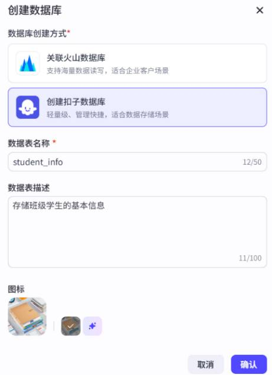
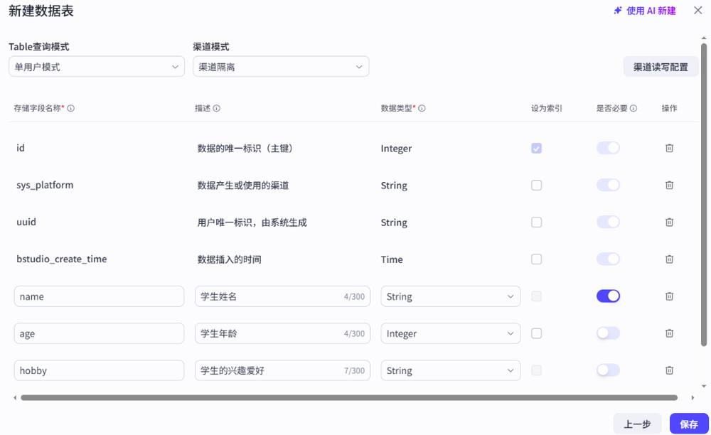
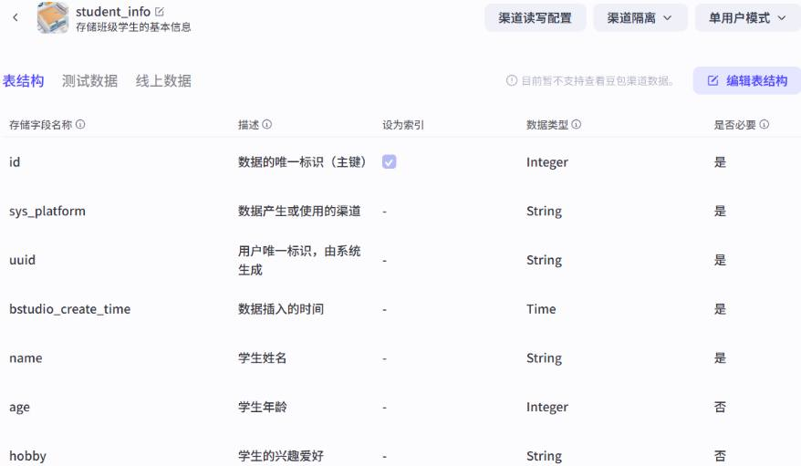
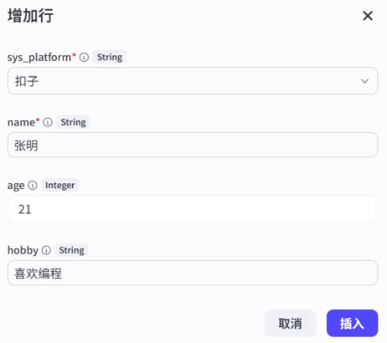
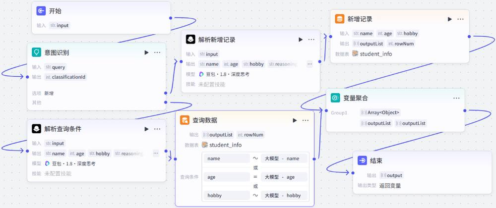
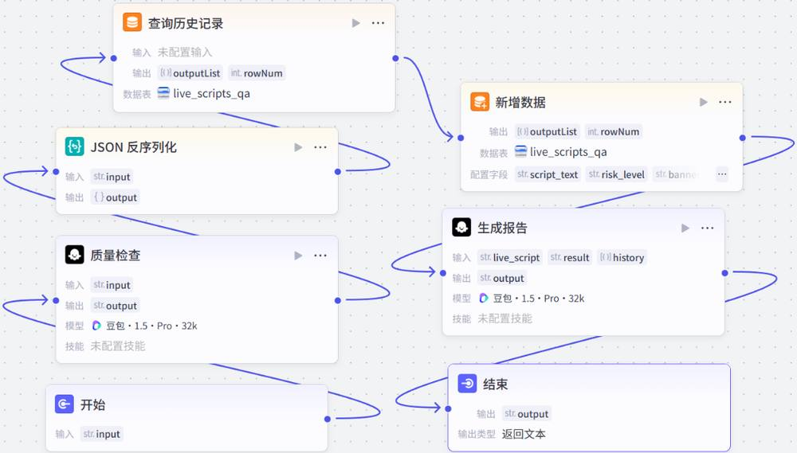

第 1 页 · 项目4
项目4
为智能体注入记忆能力
《智能体项目开发实战（扣子）（微课版）》
人民邮电出版社
工信精品人工智能系列教材
第 2 页 · 目录
目录
01
了解记忆能力
理解记忆能力的重要性，区分短期记忆与长期记忆
02
使用变量
掌握系统变量和用户变量存储动态信息的方法
03
使用数据库
掌握扣子数据库的创建、管理和操作方法
04
基于长期记忆实现个性化
理解记忆库的长期记忆功能，掌握记忆库的创建和应用
05
课后实践
通过实战任务巩固记忆能力相关技能
项目4 为智能体注入记忆能力
2
第 3 页 · 引入
引入
项目引入
记忆能力让智能体能够记住每一次交互，成为不断了解并适应用户需求的"数字伙伴"。本项目涵盖变量（临时存储）、数据库（持久化管理）、记忆库（模拟长期记忆）。
三维教学目标
知识目标
• 了解记忆能力的重要性
• 了解短期记忆与长期记忆
• 了解变量、数据库、记忆库
能力目标
• 学会使用变量存储动态信息
• 掌握自然语言操作数据库
• 学会通过工作流操作数据库
• 能够配置并应用长期记忆
素养目标
• 强化数据生命周期管理思维
• 养成重视用户体验的观念
• 培养数据隐私和安全意识
项目4 为智能体注入记忆能力
3
第 4 页 · 4.1
4.1
了解智能体的记忆能力
理解记忆能力的重要性，区分短期记忆与长期记忆，认识记忆能力与知识能力的区别
第 5 页 · 4.1.1
4.1.1
智能体为什么需要记忆能力
没有记忆能力的智能体就像每次聊天都会清零的对话窗口
短期记忆
像"便笺纸"
• 临时记录当前任务的关键信息
• 例如：用变量存储用户选择的目的地和出行天数
• 确保同一次规划中不丢失信息
长期记忆
像"个人档案库"
• 永久存储重要信息
• 例如：记录用户的历史查询、个人偏好
• 下次交互时智能体先查询这些内容
短期记忆和长期记忆的配合，系统性解决了智能体"健忘"所带来的诸多问题
记忆能力三大工具
变量 — 临时存储
数据库 — 持久化管理
记忆库 — 模拟长期记忆
项目4 为智能体注入记忆能力
5
第 6 页 · 4.1.2
4.1.2
记忆能力与知识能力的区别
两者都涉及数据存储，但有着明显的区别。区分两者有助于深入理解记忆能力。
| 对比项 | 记忆能力 | 知识能力 |
| 数据内容 | 用户在使用智能体时产生的动态数据 | 开发者提供的静态数据 |
| 数据来源 | 用户使用过程中产生的个人数据 | 由开发者创建维护，用户无法修改 |
| 使用范围 | 不可以跨智能体使用 | 可在工作空间内共享，可跨智能体使用 |
核心差异可视化
记忆能力
• 数据动态产生，随用户使用而积累
• 个性化强，每个用户的记忆不同
• 用于提供连贯、个性化的交互体验
知识能力
• 数据由开发者预先准备
• 所有用户共享同一知识库
• 用于提供专业、准确的领域知识
项目4 为智能体注入记忆能力
6
第 7 页 · 4.2
4.2
使用变量存储动态变化的信息
掌握系统变量和用户变量的使用方法，实现动态信息的存储与读取
第 8 页 · 4.2.1
4.2.1
系统变量
系统变量是扣子预定义的只读变量，为智能体配备敏锐的"感官"——感知用户、感知环境、自动化流程
| 类别 | 用途 | 典型变量 |
| 用户信息 | 标识用户身份、获取基本属性或偏好 | sys_uuid：识别和追踪用户行为；sys_longitude/latitude：用户实时位置经纬度 |
| 飞书 | 获取飞书平台的上下文信息 | sys_lark_chat_id：飞书群ID；sys_lark_open_id：飞书用户身份ID |
| 音视频 | 获取音视频通话的数据或状态 | sys_voiceprint_name：声纹名称；sys_images：音视频通话抽帧图片列表 |
核心特性：系统变量为只读状态，用户和开发者均无法修改。启用后系统自动存储变量数据，可在插件或工作流中引用。
使用方式
在智能体中启用系统变量
在工作流中引用系统变量
在插件配置中使用系统变量
项目4 为智能体注入记忆能力
8
第 9 页 · 使用系统变量识别用户ID
使用系统变量识别用户ID
通过系统变量sys_uuid识别用户ID并提供个性化问候
1
创建智能体
"用户识别测试"
功能：使用系统变量识别用户ID
2
启用sys_uuid
在"记忆"→"变量"中
打开sys_uuid开关
3
创建工作流
引用sys_uuid变量
生成个性化问候
4
测试验证
确认智能体
能识别用户ID
实际应用场景
• 用户行为追踪：将sys_uuid与数据库结合，记录每个用户的查询历史和偏好
• 多渠道用户识别：智能体发布到飞书等不同平台时，sys_uuid保证同一用户被正确识别
注意：系统变量不能修改、删除，不支持开启提示词访问（不能勾选"操作"复选框）。提示词中不能直接引用系统变量，需通过工作流引用。
项目4 为智能体注入记忆能力
9
同步训练
同步训练4-1
第 10 页 · 4.2.2
4.2.2
用户变量
用户变量以键值对形式存储每个用户需要持久化存储和读取的数据，可读可写。一个智能体最多可创建10个用户变量。
三大用途
持久化记忆
关闭对话后再次交互，智能体依然记得偏好
驱动个性化服务
从千篇一律的回答升级为用户的专属助手
简化交互流程
记住用户基本信息，无须每次重复输入
典型应用场景
个性化问候：记住用户姓名，下次交互时主动问候
偏好记忆：记录用户喜欢的主题颜色、语言偏好等设置
状态与进度跟踪：记录任务进度、学习进度等状态信息
配置方式
• 在智能体"记忆"→"变量"中创建用户变量 • 仅支持String类型 • 可开启"提示词访问"在提示词中使用 • 也可在工作流和插件中引用
项目4 为智能体注入记忆能力
10
第 11 页 · 同步训练
同步训练
使用用户变量跟踪学习进度
创建"学习进度跟踪助手"，让智能体记住用户昵称和学习进度
配置步骤
1 创建"学习进度跟踪助手"智能体
2 创建两个用户变量：name（昵称）、progress（进度）
3 开启"提示词访问"和"操作"开关
4 创建工作流：选择器判断新/老用户
5 新用户分支：引导填写昵称和进度
6 老用户分支：基于进度推荐下一步
工作流设计
选择器节点
name为空 → 新用户引导
name有值 → 进度推荐
测试验证
第一轮：新用户 → 智能体询问昵称和学习目标 → 记录变量
第二轮：老用户 → 智能体识别并基于进度推荐学习内容
核心效果：用户变量的值在对话中实现持久化存储，即使关闭对话后再次交互，智能体依然记得用户的昵称和进度
项目4 为智能体注入记忆能力
11
同步训练4-2
第 12 页 · 4.3
4.3
使用数据库存储结构化数据
掌握扣子数据库的创建、管理和操作方法，支持自然语言和工作流操作
第 13 页 · 4.3.1
4.3.1
扣子数据库与火山数据库
扣子数据库免费且易用，火山数据库是企业级云数据库服务
| 对比项 | 扣子数据库 | 火山数据库 |
| 产品定位 | 轻量级数据存储与分析 | 企业级大规模数据处理 |
| 性能扩展 | 轻量级操作 | 高性能、高可用、灵活扩展 |
| 数据隔离 | 线上/测试数据隔离，渠道隔离 | 仅线上数据，渠道互通 |
| 查询模式 | 单用户 + 多用户 | 仅多用户 |
| 操作难度 | 简单便捷 | 配置相对复杂 |
| 费用 | 免费 | 按产品费用和公网IP收费 |
建议：初学者先使用扣子数据库体验功能，涉及大规模、复杂数据处理时再使用火山数据库。
项目4 为智能体注入记忆能力
13
第 14 页 · 4.3.2
4.3.2
进一步了解扣子数据库
扣子数据库 vs 传统数据库
| 对比项 | 扣子数据库 | 传统数据库 |
| 数据模式 | 灵活模式，类似NoSQL | 固定模式，需预先定义表结构 |
| 交互方式 | 自然语言驱动 + 可视化配置 | SQL驱动 |
| 操作难度 | 可视化界面，自然语言操作 | 需掌握SQL和数据库管理 |
| 适用场景 | AI对话记录、用户偏好、状态跟踪 | 电商交易、金融系统、ERP |
单用户模式 vs 多用户模式
| 对比项 | 单用户模式 | 多用户模式 |
| 读写权限 | 有限读写，仅能操作自己创建的数据 | 完全读写，可操作同渠道任何数据 |
| 应用场景 | 记账、个人记录 | 漂流瓶、排行榜 |
| 生效范围 | 提示词、查询、工作流均支持 | 仅工作流的数据库节点中生效 |
系统保留字段（自动添加，不可删除）：id（唯一标识）、sys_platform（渠道）、uuid（用户标识）、bstudio_create_time（创建时间）
项目4 为智能体注入记忆能力
14
第 15 页 · 同步训练
同步训练
创建扣子数据库
以班级学生信息表为例，演示扣子数据库的创建过程
1
选择"创建扣子数据库"
2
设置表名：student_info
3
选择"单用户模式"
4
新增字段并保存
项目4 为智能体注入记忆能力
15
同步训练
同步训练4-3


第 16 页 · 同步训练
同步训练
管理数据表
表结构管理
• 在数据库详情页面查看和编辑表结构
• 可更改查询模式（单用户/多用户）
• 可随时添加、修改、删除自定义字段
数据记录管理
• 添加单条记录："增加行"按钮，按字段填写
• 批量导入：下载模板→填写→上传Excel/CSV
• 文件最大不超过20MB
数据隔离机制
测试数据
开发调试时产生的临时数据，用于发现并修复问题
线上数据
智能体实际运行时产生的真实数据，采用渠道隔离规则
项目4 为智能体注入记忆能力
16
同步训练
同步训练
同步训练4-4


第 17 页 · 同步训练
同步训练
使用自然语言操作数据表
NL2SQL方式：通过自然语言与智能体交互，对数据库进行增删改查操作
操作步骤
1 创建"班级学生信息管理助手"
2 在"记忆"→"数据库"中添加数据库
3 开启"提示词调用"功能
4 编写系统提示词定义四大技能
5 测试查询、添加、修改、删除
提示词四大技能
技能1 查询学生信息：按姓名等条件查询
技能2 添加学生信息：确认完整性后添加
技能3 修改学生信息：确认存在后修改
技能4 删除学生信息：确认存在后删除
限制：只回答与学生信息管理相关的内容
测试验证
查询验证通过
添加验证通过
修改验证通过
删除验证通过
验证方式：测试后可单击"预览与调试"面板右上角的"记忆"图标，选择"已存数据库"查看数据表中的数据，进一步验证操作结果。
项目4 为智能体注入记忆能力
17
同步训练
同步训练
同步训练
同步训练4-5
第 18 页 · 同步训练
同步训练
通过工作流操作数据表
扣子编程支持在工作流中添加数据库相关节点，实现更灵活的数据操作
五种数据库工作流节点
SQL自定义
新增数据
查询数据
更新数据
删除数据
工作流设计示例
开始→意图识别（判断添加/查询）→ 分支处理
添加分支：解析信息(姓名/年龄/爱好) → 新增数据 查询分支：解析条件 → 查询数据
两条分支汇聚 → 变量聚合 → 结束节点
项目4 为智能体注入记忆能力
18
同步训练
同步训练
同步训练
同步训练4-6
第 19 页 · 同步训练
同步训练
通过工作流操作数据表
测试用例：输入"添加一个学生：赵茹茹，21岁，电影和美术" → 验证数据已正确添加；输入"找出21岁的学生" → 验证返回结果符合预期。
项目4 为智能体注入记忆能力
18
同步训练
同步训练
同步训练
同步训练4-6

第 20 页 · 案例实战
案例实战
直播话术质检助手
场景：分析电商直播话术，自动识别违禁词、统计核心卖点、生成质检报告
价值：数据库用于存储质检数据，便于查询历史、生成报告、进行趋势判断
系统架构
创建数据库
存储质检结果
创建工作流
质检自动化
创建智能体
调用工作流
测试验证
输入话术检测
质检报告内容
违禁词检查
识别违规表述
卖点统计
提取核心卖点
历史趋势
对比近7天数据
质检报告
Markdown格式输出
设计亮点：质量检查节点输出JSON格式 → JSON反序列化提取字段 → 查询近7天历史记录 → 新增数据节点存入数据库 → 生成报告节点整合实时结果与历史趋势生成Markdown报告
项目4 为智能体注入记忆能力
23
同步训练
同步训练
同步训练
案例实战4-1
第 21 页 · 案例实战
案例实战
1 切换到资源库 → "资源"→"数据库"
2 选择"创建扣子数据库"
3 设置数据表名称：live_scripts_qa
4 描述：记录直播话术质检结果
5 新增4个自定义字段
6 保存完成创建
自定义字段定义
| 字段名称 | 描述 | 数据类型 | 是否必要 |
| script_text | 直播话术原文 | String | 是 |
| risk_level | 风险等级（高/中/低） | String | 是 |
| banned_words | 发现的违禁词列表 | String | 否 |
| key_points | 核心卖点统计 | String | 否 |
注意：系统会自动添加id、sys_platform、uuid、bstudio_create_time四个保留字段，无需手动创建。
项目4 为智能体注入记忆能力
24
案例实战
直播话术质检助手——创建数据库
同步训练
同步训练
同步训练
案例实战4-1
第 22 页 · 案例实战
案例实战
开始节点
输入变量：input
类型：String
接收用户输入的直播话术
质量检查
大模型节点
• 违禁词检查
• 卖点提取
• 输出JSON格式
JSON反序列化
提取JSON字段：
• risk_level
• banned_words
• key_points
查询历史
SQL节点
查询近7天
历史记录
质量检查节点配置
系统提示词要点：
• 角色：专业直播话术质检员
• 任务1：检查是否出现违禁词（如"最""第一""绝对"等极限词）
• 任务2：提取并统计话术中提到的产品核心卖点
• 输出格式要求：必须输出JSON格式，包含risk_level、banned_words、key_points三个字段
设计要点：质量检查节点输出JSON → JSON反序列化提取字段 → 查询历史记录时排除当前新数据（查询节点在新增节点之前执行）
项目4 为智能体注入记忆能力
25
直播话术质检助手——创建工作流
同步训练
同步训练
同步训练
案例实战4-1
第 23 页 · 案例实战
案例实战
新增数据
新增数据节点
将质检结果存入
live_scripts_qa
数据库
生成报告
大模型节点（DeepSeek-R1）
整合实时结果+历史趋势
生成Markdown格式报告
结束节点
输出质检
报告给
智能体
质检报告结构（Markdown）
本次质检摘要
风险等级、核心结论
历史趋势关联
7天内违规次数、趋势判断
关键发现清单
违禁词、卖点、潜在风险
行动建议
替换违禁词、优化表述
生成报告节点提示词要点
• 角色：专业直播话术质检专家
• 输入：当前话术文本 + 实时质检结果（risk_level/banned_words/key_points）+ 近7天历史记录
• 输出要求：使用Markdown语法，包含四大模块（摘要、趋势、发现、建议）
项目4 为智能体注入记忆能力
26
直播话术质检助手——创建工作流
同步训练
同步训练
同步训练
案例实战4-1
第 24 页 · 案例实战
案例实战
项目4 为智能体注入记忆能力
26

直播话术质检助手——创建工作流
同步训练
同步训练
同步训练
案例实战4-1
第 25 页 · 案例实战
案例实战
1 新建智能体"直播话术质检助手"
2 功能介绍：自动分析直播话术，识别违禁词
3 在"技能"区域添加工作流
4 编写人设与回复逻辑提示词
5 配置开场白
6 输入直播话术进行测试
提示词核心要点
• 角色：专业直播话术质检专家
• 核心规则：收到话术后调用工作流
• 输出要求：呈现结构化质检报告
• 限制条件：不回答与质检无关的问题
• 异常处理：工作流无输出时提示重试
测试验证
违禁词识别准确
卖点提取完整
历史趋势关联
报告格式规范
核心结论：本案例展示了数据库+工作流+大模型的协同应用。数据库实现了质检数据的持久化存储，工作流实现了自动化处理流程，大模型提供了智能分析能力。
三者结合，构建了一个完整的、可迭代的直播话术质检系统。
项目4 为智能体注入记忆能力
27
直播话术质检助手——创建智能体
同步训练
同步训练
同步训练
案例实战4-1
第 26 页 · 4.4
4.4
基于长期记忆实现个性化回复
理解记忆库的长期记忆功能，掌握记忆库的创建和应用方法
第 27 页 · 4.4.1
4.4.1
为什么需要记忆库的长期记忆能力
上下文是短期记忆，超过模型指定的上下文轮数后，对话效果通常会大打折扣
记录 Record
• 自动识别并记录用户在对话中提供的个性化信息
• 记录用户画像、记忆点、偏好等
• 持续从对话中学习和积累
召回 Recall
• 根据用户要求提取相关的长期记忆
• 总结个性化信息
• 在此基础上生成最终回复
适用场景
AI助手
持续了解用户需求
虚拟伴侣
建立情感连接
心理咨询
追踪心理状态变化
长期记忆让智能体摆脱"金鱼记忆"，成为真正能与用户共同成长、越用越聪明的"数字伙伴"
项目4 为智能体注入记忆能力
20
第 28 页 · 4.4.2
4.4.2
长期记忆、变量与数据库的对比
| 对比项 | 长期记忆（记忆库） | 变量 | 数据库 |
| 核心定位 | 隐性记忆，模仿人类大脑 | 显性记忆，结构化记事簿 | 共享资料库，结构化表格 |
| 数据特征 | 非结构化、动态生成 | 结构化、静态定义 | 高度结构化、关系型 |
| 使用方式 | 自动运作，系统提取特征 | 手动配置，显式读写 | 手动设计+自动查询 |
| 主要作用 | 对话连贯性和个性化氛围 | 状态跟踪和精准回忆 | 业务数据持久化与复杂操作 |
记忆库与数据库的显著区别
主动 vs 被动
记忆库主动观察提炼；数据库需被动录入
动态 vs 静态
记忆库内容动态生长；数据库内容相对静态
模糊关联 vs 精确查询
记忆库语义模糊关联；数据库条件精确查询
协同工作：记忆库感知偏好 + 变量记录对话ID + 数据库查询历史订单 = 贴心且精准的服务
项目4 为智能体注入记忆能力
21
第 29 页 · 案例实战
案例实战
会成长的"阅读伙伴"
创建一个能记住用户阅读偏好，并随时间共同成长的读书助手
1
创建记忆库reading
2
创建"阅读伙伴"智能体
3
配置记忆库和Prompt调用
4
编写提示词并多轮测试
提示词三大核心能力
主动识别与记忆
识别阅读偏好、评价、目标，自动记录到记忆库
基于记忆的推荐
优先推荐符合偏好的书籍，自动关联之前的讨论
记忆的验证与更新
主动询问反馈，根据用户反馈更新和调整记忆
多轮对话测试
第一轮：表达阅读兴趣（理财类）→ 智能体推荐书籍并记录偏好
第二轮：提及喜欢某书风格 → 智能体自动关联第一轮记忆，推荐类似书籍
第三轮：提出新需求（历史类有声书）→ 智能体区分新旧需求，结合场景推荐
第四轮：反馈不喜欢某书的风格 → 智能体修正记忆，调整偏好为"严肃但叙事生动"
项目4 为智能体注入记忆能力
22
同步训练
同步训练
同步训练
案例实战4-2
第 30 页 · 4.5
4.5
课后实践
1
健身进度跟踪智能体
使用用户变量记录健身目标和周运动时长，跟踪运动类型和时长
2
问答节点收集信息
设置问答节点收集用户信息，自动提取关键字段传给新增数据节点
3
增加更新和删除功能
在工作流中使用更新数据节点和删除数据节点
4
广告违禁词知识库扩展
为直播话术质检助手提供广告违禁词知识库，让检查更专业
5
具备长期记忆的对话智能体
创建能记住用户关键个人喜好的智能体，在后续对话中主动运用这些信息。建议对比有记忆和无记忆两种状态下的表现差异。
实践提示
• 任务2中，问答节点的"回答类型"指定为"直接回答"，开启"从回复中提取字段"功能
• 任务5建议通过对比实验理解长期记忆的价值：无记忆时每次对话从零开始，有记忆时对话持续深入
• 所有任务完成后，思考记忆库与变量、数据库在实际应用中的最佳组合方式
项目4 为智能体注入记忆能力
28
第 31 页 · 项目4 总结
项目4 总结
为智能体注入记忆能力
记忆能力概述
变量存储
数据库管理
长期记忆个性化
核心要点：记忆库 + 变量 + 数据库协同工作，共同打造有"生命力"的智能体
《智能体项目开发实战（扣子）（微课版）》
人民邮电出版社